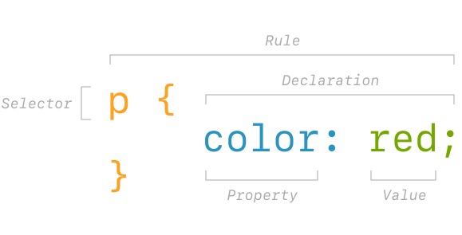

CSS is the standard language for styling web pages, which specifies what the page’s HTML will look like in the browser.
Just like HTML, it is still just text, in a file, on a computer. It can live inside HTML documents themselves, but is more commonly seen on its own with the extension .css
CSS came after HTML, first proposed by Håkon Wium Lie in 1994 – who was working with Tim Berners-Lee at CERN and wanted more control over the presentation of web pages.
Before we get into CSS itself, let’s talk about how it is incorporated with HTML. There are three ways it can be added:
<style> elements in HTML documents<link> elementsstyle=This was the original way to add styles, directly as attributes in HTML tags:
<p style="color: red;">This text will be red!</p>
This has some downsides. Imagine you want to style all of your paragraphs in the same way, and with multiple properties:
<p style="color: red; font-family: sans-serif;">This text will be red!</p>
<p style="color: red; font-family: sans-serif;">I’d also like this to be red.</p>
<p style="color: red; font-family: sans-serif;">And they are all sans-serif, too.</p>
It makes it hard to read, and hard to change and maintain. You’d have to update every single instance. In software, we’d refer to this as brittle – meaning "easy to break". You can imagine this getting even harder to read the more properties you add.
<style> tagSo the next way that was added to the standard was using a special HTML element, <style>, that wraps blocks of CSS that then apply to an entire document. They go up in the <head> of our HTML documents:
<!DOCTYPE html>
<html>
<head>
<title>Page title</title>
<style>
p {
color: red;
font-family: sans-serif;
}
</style>
</head>
<body>
<p>This is a paragraph.</p>
<p>This is another paragraph.</p>
<p>This is third paragraph.</p>
</body>
</html>
The rules are written written with selectors – more on those, below. But importantly, we can now control the color of all the paragraphs easily, at once.
<link> tagSo this is already much better, allowing us to style whole pages easily and consistently. But what about when we have multiple pages? If you wanted a whole site to use the same styles, you’d have to duplicate the <style> tag over and over, updated it everywhere whenever you changes. Still brittle. So along comes the <link> element:
<!DOCTYPE html>
<html>
<head>
<title>Page title</title>
<link href="style.css" rel="stylesheet">
</head>
<body>
<p>This is a paragraph.</p>
<p>This is another paragraph.</p>
<p>This is third paragraph.</p>
</body>
</html>
And then in a separate style.css file (in this case, in the same directory as our HTML file), we can have the same rules as before – no need for the outside wrapping <style> tag:
p {
color: red;
font-family: sans-serif;
}
This will apply to any page that we add the <link> to, and updating the styles will now change the color of the paragraphs in our entire web site.
We’ll talk more about specificity later, but it is worth noting that the inline approach will usually take precedent over other methods – under the “closest, then lowest” logic.
Even though it is used to style HTML elements, the syntax of CSS is very different. CSS rules are made up of selectors, used to target certain elements, and then the declarations that you want to apply to them:

The curly brackets { } enclose all the declarations you want to apply to a given selector. These declarations are in turn made up of properties and values.
Properties are always separated from their corresponding values by a colon :, and each declaration line has to end in a semicolon ;. Also, there are no spaces between values and their units (like 20px)
There are many, many CSS properties. Here is a shorter “common” list.
Selectors are used to target certain HTML elements within the page. These can get pretty complicated, but we’ll look at the three simplest and most common methods to start:
If you want to change the styles for all instances of a given HTML element, you drop the < > from the tag for an element selector. These are called type selectors:
a {
color: blue;
text-decoration: underline;
}
p {
font-family: Arial;
font-size: 20px;
}
You can also use an id, which is a kind of special attribute that can only be used once in an HTML document:
These are prefixed by # in CSS, as with #title and #introduction.
You can then use a class to target specific instances. They are added as an attribute on the element you want to target:
The value here is our class name, which we write in CSS by prefixing with a . as with .highlight.
Individual elements can have multiple classes, too. Class names can be whatever you want – there are whole methodologies about what to call these things, such as BEM, but for now just make them descriptive and consistent.
Classes are the most common way to target things in CSS. Prefer them over IDs, as they are more flexible and reusable. (You can only use an ID once, but you can use a class as many times as you want.)
You can use the various HTML attributes as selectors, too. These are similar to using classes, but can help you differentiate things like internal and external links, for example:
These are special selectors, added to element, class, or id which target unique states or instances of HTML elements. You’ll often see these used to target link states:
You will sometimes want to target something based on its relationship to other elements – its siblings or its parents. For this, CSS has combinators, which let you relate all the various selectors we’ve learned about here together.
Importantly, combinators can only “see” elements before and above themselves – meaning their previous (older?) siblings or their parents. This directionality somewhat corresponds with the cascade, which we’ll talk about shortly.
For the most part these can get very complicated and are generally considered bad practice.
:has() changes this!However, for many years folks have wanted a “parent selector” in CSS – meaning a way to apply a style to a parent/container based on one of its children. This was not possible before, as we mentioned above.
CSS has finally added the :has() pseudo-class. It allows us to write much simpler, logical styles:
This code will target the parent .my-parent that has the element .my-child within it (effectively targeting a parent based on the child).
The first three targeting methods (element, .class, #id) are listed in increasing order of specificity, meaning that a class trumps an element rule, and an ID trumps a class.
IDs are thus more specific than classes, which are more specific than element selectors. (And you shouldn’t really use them, but inline styles beat them all.) Take this example:
You could write a long book (and many people have) about CSS specificity – the myriad of ways that some CSS rules take precedent over others. It is often one the more frustrating parts (especially when working with legacy code that is poorly considered).
The easiest way to avoid specificity problems is generally to stay at the same level throughout your HTML/CSS, by just using classes.
We haven’t even talked about that first C! Remember, it stands for cascading. This means that when there is a tie (like two classes applying the same property), the lowest rule wins – literally the one further down within a CSS document, or within a style tag. If you have multiple CSS documents with <link> element, the lower linked document will take precedence.
To add even more confusion, some CSS properties set on a parent also apply to their children – such as color or font-family. Most spacing/layout properties, like width and margin do not.
This allows you to quickly set some properties globally, without having many brittle/redundant rules, as we did before:
All the children inherit the body styles.
Alright, so all this has been about targeting elements – what about actually styling them? Let’s introduce a few quick properties to get us started.
Besides the basic examples above, color can be specified in a few different ways:
Named colors are quick to work with when you know a few, but hsla offers a more intuitive way to adjust and work with colors.
These can also all be applied to background-color and border, and anywhere that accepts a color.
Then perhaps most importantly, you’ll usually be customizing your typography:
Web font licensing is a Whole Big Thing – so let’s start out by making use of web-safe fonts or Google Fonts, which offers many open-source typefaces nicely packaged for web use. You can select families and weights there to easily include in your pages, as in the example above.
Once you’ve got a font-family in, there are additional properties to control the typography:
Browsers have their own, built-in way that they display HTML elements. These user-agent styles are specific, somewhat, to each platform and each browser. This is the “look” we have been seeing when we write plain HTML without any CSS – usually Times New Roman, with blue links, and small spacing between elements.
Often, when you are working towards your own design, you will find yourself fighting against these built-in styles. Many designers/front-end folk instead start with resets – a semi-standard collection of CSS rules that “zero out” the browser’s built-in styles. This means you have to write everything yourself, but you have more control and aren’t building on unknown foundations. And things should be (more) consistent, across browsers and platforms.
Here is a simple, modern one for your <head>. Download the raw file here and use it like so:
<head>
<link rel="stylesheet" href="reset.css"> <!-- reset default styles -->
<link rel="stylesheet" href="style.css"> <!-- your styles -->
</head>
This lecture was originally written by Michael Fehrenbach. It has since been edited.